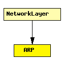

File: Network/ARP/ARP.ned
C++ definition: click here
Implements the Address Resolution Protocol for IPv4 and IEEE 802 6-byte MAC addresses.
Expects IPRoutingDecision control info objects to be attached to packets coming from higher layers. ARP packets are represented by the ARPPacket class. Datagrams to be sent and incoming ARP packets are expected to on gate ipIn.
ARP resolution is used over broadcast interfaces only, that is, over interfaces that have the isBroadcast() flag set in InterfaceEntry (see InterfaceTable). Since routing files (.irt or .mrt files, given as parameter to RoutingTable) may modify the default interface configuration, you must take care that these files don't contain the word BROADCAST e.g. for PPP interfaces.
The following diagram shows usage relationships between modules, networks and channels. Unresolved module (and channel) types are missing from the diagram. Click here to see the full picture.
If a module type shows up more than once, that means it has been defined in more than one NED file.
| NetworkLayer | Network layer of an IP node. |
| Name | Type | Description |
|---|---|---|
| retryTimeout | numeric | number seconds ARP waits between retries to resolve an IP address |
| retryCount | numeric | number of times ARP will attempt to resolve an IP address |
| cacheTimeout | numeric | number seconds unused entries in the cache will time out |
| proxyARP | bool | sets proxy ARP mode (replying to ARP requests for the addresses for which a routing table entry exists) |
| Name | Direction | Description |
|---|---|---|
| ipIn | input | |
| nicOut [ ] | output |
simple ARP parameters: retryTimeout: numeric, // number seconds ARP waits between retries to resolve an \IP address retryCount: numeric, // number of times ARP will attempt to resolve an \IP address cacheTimeout: numeric, // number seconds unused entries in the cache will time out proxyARP: bool; // sets proxy \ARP mode (replying to \ARP requests for the addresses for which a routing table entry exists) gates: in: ipIn; out: nicOut[]; endsimple